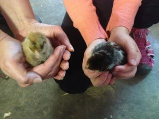
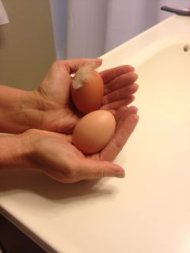

How to take care of chickens
It is very easy to take care of chickens. Some easy kinds are
- Americauna
- Andalusian
- Australorp
- Barnvelder
- California Gray
- Cornish Cross
- Holland
- Hyline
- ISA Brown
- Langshan
- Minorca
- Naked Neck
- Orpington
- Production Red
- Rhode Island Red
- Rhode Island White
- Star
- Vorwerk
- Welsummer
- Wyandotte

This black chicken is a silver wyandotte. It has died already, because of the other chick. The yellow chick is an Americauna. It smothered that chick. That's why we named it Miss Easter Killer. It will lay Easter colored eggs and it smothered that chick, and now it is dead.
Food and water amounts
With about three chicks you should feed them as much as they can eat. Also with about three chicks change there water two times a day. With about five grown up chickens, feed them as much as their bowl can hold. They'll usually eat it all. Feed your chickens every day at breakfast time, not lunch, not dinner, not snack, but breakfast. For the water of five full-grown chickens, about every day pour out a little bit of water. New water will flow in. About every five weeks, get the water can and take off the top and get new water in it.
Are chickens easy to take care of?
Kind of yes, kind of no. The easy part is. feeding holding and watering and the hard part is chaseing and herding chickens in to the coop when the pen falls down whitch I have to do and when it happens I herd them in or chase then grab then drop them in the coop if the fence falls on a chicken I go for it first I run as fast as I can to it then I help the chicken then grab it and put it in the coop then I grab the other chickens and put them in the coop then I call my dad and we do teamwork and put the pen back up.
Do chickens make food

In a matter of fact yes two ways first their is meat which can make soup, fried chicken